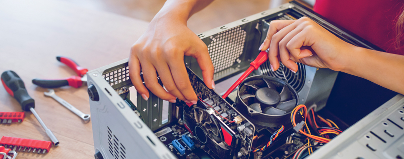
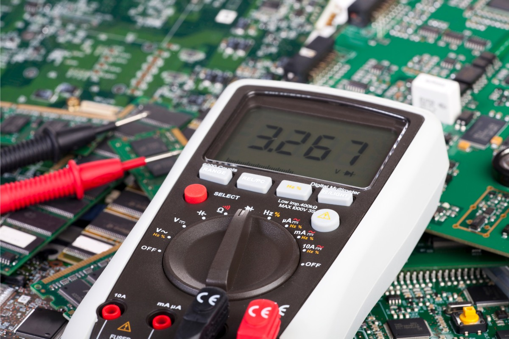

Beyond Standard Repair: Precision Engineering.
In the modern era of computing, hardware failures are rarely solved by simple part replacements. At Lapoworld, founded by Sujan Saha, we treat your technology as a complex ecosystem requiring microscopic precision and deep electronic understanding.
1. Chip-Level Micro-Soldering (SMD/BGA)
The vast majority of authorized service centers operate on a "board replacement" philosophy. If a single capacitor blows on your logic board, they quote you for an entirely new board, which can cost upwards of 60-80% of the machine's original value. This is not repair; this is replacement. Lapoworld fundamentally rejects this approach.
Our lab is equipped with high-end digital microscopes, thermal imaging cameras, and precision soldering stations. When a MacBook or Windows laptop suffers a power failure, our technicians trace the schematic diagrams to find the exact microscopic component—be it a MOSFET, a blown capacitor, or a faulty charging IC—that is preventing the power rail from operating correctly. By using BGA (Ball Grid Array) rework stations, we can physically unseat a faulty CPU or GPU, reball the connections with leaded or unleaded solder, and place it back onto the logic board with infrared heating.
This chip-level capability requires hundreds of hours of training and steady hands, but it allows us to save motherboards that others declare "dead." We revive liquid-damaged devices by placing the boards in ultrasonic cleaners that utilize specialized cavitation fluids to strip away galvanic corrosion before we begin the micro-soldering process.

2. Advanced Data Recovery Protocols
Your data is often more valuable than the hardware it resides on. When a storage drive fails, panic usually sets in. Lapoworld divides data recovery into two distinct protocols: logical recovery and physical (mechanical) recovery.
Logical Recovery: This occurs when the hardware is functioning, but the file system is corrupted, accidentally formatted, or affected by malware. We utilize deep-scanning algorithms that bypass the standard OS file tables, reading the raw hexadecimal data off the platters or NAND chips to reconstruct fragmented files, photos, and databases.
Physical Recovery: When a mechanical Hard Disk Drive (HDD) clicks, beeps, or refuses to spin up, the read/write heads have likely crashed onto the platters, or the PCB board has shorted. We source donor drives with identical firmware and PCB architectures, physically swap the ROM chips via soldering, and temporarily revive the drive long enough to clone the raw data block-by-block onto a secure NVMe SSD. For failing Solid State Drives (SSDs), we trace the power rails to the NAND flash chips to bypass shorted controllers.
3. Display Engineering & Panel Integration
A cracked screen is more than a cosmetic issue; modern displays are highly integrated components. Replacing a Retina display on a MacBook or a 144Hz IPS panel on a gaming laptop requires precise calibration to ensure color accuracy, brightness consistency, and proper True Tone functionality.
We don't just swap the glass. We ensure that the EDP (Embedded DisplayPort) cables are properly seated, hinges are re-tensioned to prevent future chassis stress, and ambient light sensors are transferred correctly. For devices with delaminated anti-reflective coatings or failing backlight fuses on the motherboard, we bypass the screen entirely and address the logic board directly, restoring original functionality without unnecessary screen replacements.

4. Thermal Dynamics & Cooling Optimization
Thermal throttling is the silent killer of performance. Over time, the factory thermal paste applied to your CPU and GPU dries out, turning into a chalky substance that traps heat rather than transferring it. The cooling fans ingest dust, blocking the exhaust fins of the heatsink.
Lapoworld provides comprehensive thermal teardowns. We remove the oxidized factory paste using high-purity isopropyl alcohol and replace it with enthusiast-grade compounds, such as Thermal Grizzly Kryonaut or, for advanced users, Liquid Metal applications. We ultrasonically clean the fan bearings and re-lubricate them to restore factory RPMs. This process routinely drops operating temperatures by 15°C to 25°C, eliminating stuttering in games, speeding up video render times, and drastically extending the lifespan of your silicon.
What Our Clients Say
Don't just take our word for it. Here is what technology professionals and gamers across Kolkata and Howrah have to say about Lapoworld.